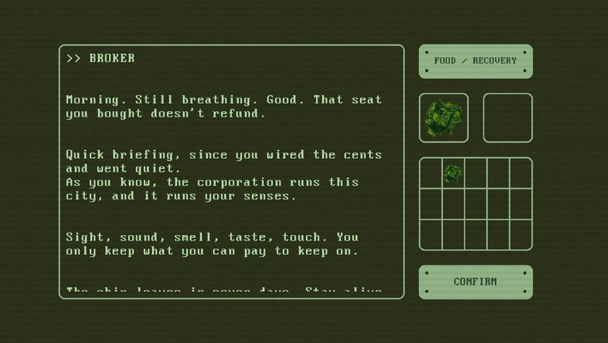
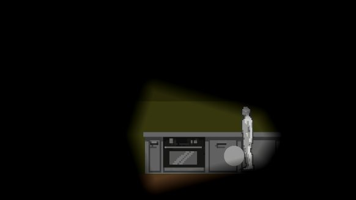
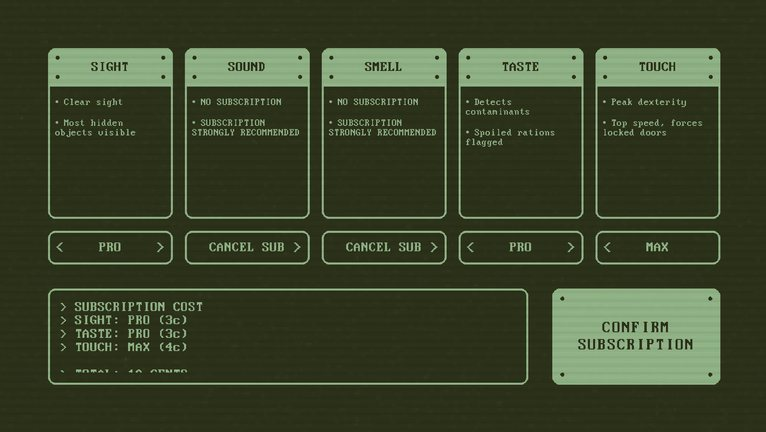
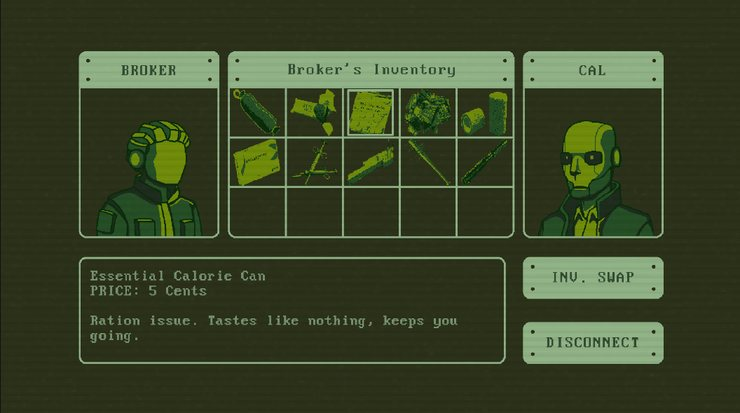

Cents for Sense · Systems and UI
One system, not three
Four scenes built one at a time, and the work of making them feel like one game.

- Problem
- Each scene in the day loop was built on its own, so panels, grids and the way actions confirmed all drifted apart. It stopped feeling like one game.
- My role
- Planning and design with my teammate, the UI and interactions outside the side-scrolling levels, data that carries between scenes, and the pixel art.
- What I built
- One shared interface: one panel and CRT setup, one interaction layer, one click sound and one wallet, used by every screen.
- What changed
- The morning event, sense subscription and trade now read as one interface instead of three. The demo won Best Use of Theme.
Context
Your senses are a subscription
We made this for the YOU CAN PLAY THIS GAME JAM, hosted by Noodle Goose Games, where the theme was accessibility. We took it literally. A corporation sells sight, sound, smell, taste and touch as a daily subscription, and you have seven days and very few cents to survive until your ship leaves.
Each sense has tiers, and a tier changes the quality of what you perceive rather than switching it on or off. You start with 26 cents and tiers cost 2, 7 and 12, so you cannot keep everything.
A day runs morning event, sense subscription, scavenging, trade. Every one of those choices goes through a screen, and what you choose there decides whether you survive. If one screen feels foreign, the player stops trusting all of them.

Process
01Finding it by playing, not imagining
I played the finished build start to finish and flagged every spot that felt off or strangely different from the screen before it. The pattern was clear once it was all in one run: each screen had its own panel style, its own grid and its own way of confirming an action.
02Reuse, don't restyle
The easy fix was to repaint each screen until they matched. I went the other way. I took the morning event's panel and CRT codec setup as the template and rebuilt trade and sense subscription from the same parts, so they are the same components rather than three look-alikes.


03Same behaviour, not just looks
Matching panels only goes so far if each screen still acts differently. The interaction layer, the click sound and the wallet are shared across every scene, so spending a cent or moving an item feels the same wherever you are. The same trade interface handles buying from NPCs and taking items from containers in the levels, with only the portrait and the currency rule changing.
Playing it also showed that the inventory felt unresponsive. My first version left a picked-up item on the grid until you confirmed, so you could not tell the pickup had worked. I rebuilt it so the item leaves the slot the moment you grab it.
Outcome
One interface, and Best Use of Theme
The demo shipped as a WebGL build on itch.io and won Best Use of Theme. Put together, the morning event, sense subscription and trade read as one interface: same panels, same feedback, same feel everywhere.
What I'd change
The jam's accessibility mentors pointed out something we had missed. The theme was about access, but the controls were not: holding Space to interact and dragging items both ask a lot of the player's hands. The plan after the demo is click to pick up and place instead of dragging, a hold or tap toggle, remappable controls, audio cues for every action, and colour cues that always come with a label.
- Find problems by playing, not imagining. The inconsistency only showed up in a full run.
- Unify with one system, not restyling. Shared parts stay consistent when screens change.
- Consistency is what earns trust. When every choice goes through the UI, the UI is the game.
Materials